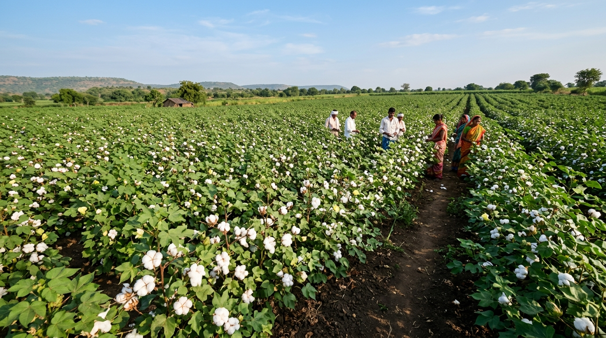

Empowering Indian cotton growers with instant leaf pathology diagnosis (CNN) and micro-climate risk modeling (SNN). Detect water stress, heat stress, nutrient deficits, and pests before yield loss occurs.

Combining deep learning visual analysis with environmental context to give cotton farmers accurate stress screening and practical guidance.
Visual cotton leaf stress classification across five discrete stress categories.
Real-time field context: temperature, humidity, rainfall, soil moisture, AQI, and ozone.
Spiking neural network estimating environmental stress risk levels (Low, Moderate, or High).
Synthesizes visual and environmental evidence into a unified, contextual stress assessment.
Plain-language explanations and practical agronomic next steps for informed farm decisions.
Early stress screening designed to help cotton growers act before stress leads to yield loss.
From a cotton leaf image and environmental conditions to an AI-assisted stress assessment.
Capture or upload a clear photo of a single cotton leaf.
Deterministic CNN model classifies visual stress indicators.
Provide temperature, humidity, rainfall, and soil moisture.
Spiking neural network evaluates temporal environmental stress patterns.
Visual and environmental evidence are synthesized into a coherent profile.
Receive plain-language advice and proactive recommendations.
A comprehensive approach to cotton plant monitoring built on dual-stream neural intelligence.
Does not rely solely on visual leaf symptoms. Integrates environmental context to avoid misdiagnosing external stress factors.
Classifies Healthy, Water Stress, Heat Stress, Nutrient Deficiency, and Pollution with individual probability distributions.
Spiking Neural Network evaluates temporal field conditions into Low, Moderate, or High environmental stress risk levels.
Translates complex model probabilities and spike outputs into understandable, practical agricultural insights.
Analyze a cotton leaf, review environmental conditions, and explore an AI-assisted stress assessment.
Start Using AgroVision →